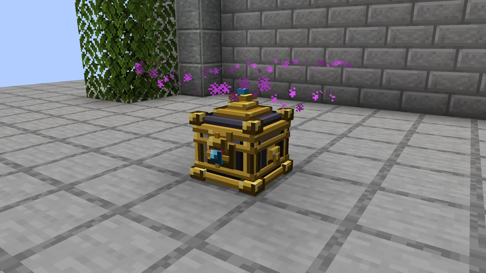
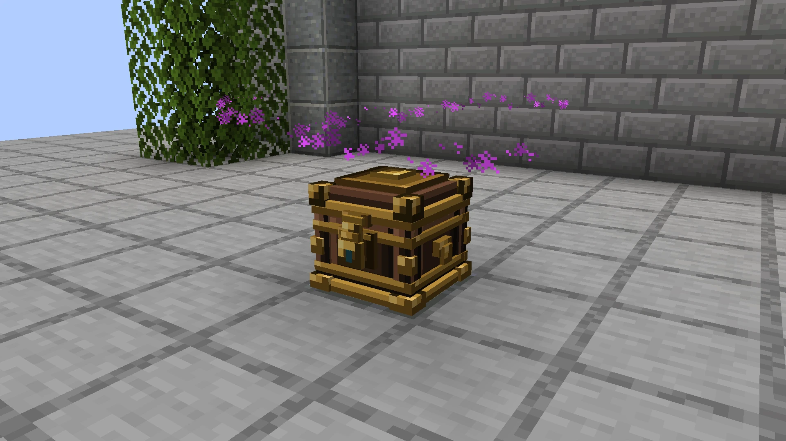
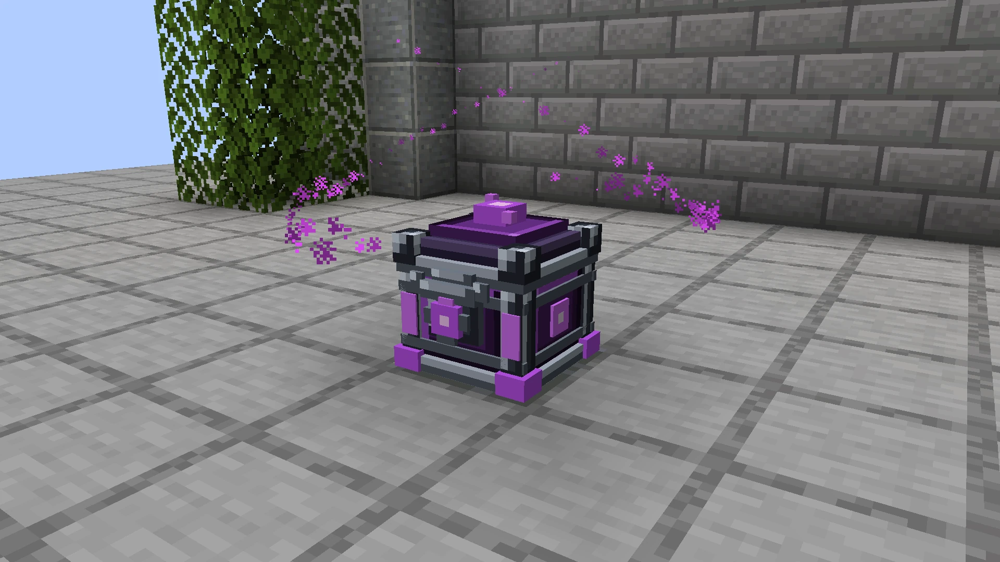

Server + client
Lite uses the same matching loader JAR on the server and every client. Pro uses separate server and client companion JARs.
Minecraft 1.21.1 · Fabric & NeoForge
Give your players a crate worth opening. Choose a tier, set the rewards and hand out its matching key.
Java 21 · server only or server + client

UniCrates Lite · free
Common, Rare, Epic and Legendary, with matching physical keys and their own opening timelines. Edit names, rewards and weights in JSON. No license or activation service required.


Lite supports item, command, experience and broadcast rewards, reward previews and JSON player storage. Cobblemon is not required. New default crates work for ordinary players without OP.
CurseForge submission is being prepared. A public download link will appear here after approval.
Lite is a complete free edition. Pro is a separate paid edition for server owners who need more control.
| Feature | Lite | Pro |
|---|---|---|
| Crates and models | Four built-in tier families | Additional built-in families and custom models |
| Openings | Four bundled tier timelines | Custom timelines and additional opening systems |
| Rewards | Items, commands, XP and broadcasts | Additional reward types and optional integrations, including Cobblemon |
| Configuration | JSON files | JSON, browser editor and in-game editor |
| Player storage | JSON files | JSON, SQLite or MySQL/MariaDB |
| License | Free; no activation | $40 once; one active server; online activation |
Optional integrations require compatible dependencies. Pro features also depend on the installation mode and client capabilities; check the installation guide before buying.
Lite uses the same matching loader JAR on the server and every client. Pro uses separate server and client companion JARs.
Install the server-only JAR on the server. Players need no UniCrates client mod, but must accept your hosted, required resource pack. Other modpack dependencies still apply.
Choose Fabric or NeoForge, then one installation mode. Fabric also requires Fabric API. Do not combine alternative server JARs. Back up existing worlds before changing modes.
Read the installation guideUniCrates Pro 3.x
Custom models and openings, browser configuration, additional integrations and SQL storage for your server.
Pro is licensed server software. It does not sell players crate keys, random rewards or gameplay advantages.
Read the edition and activation detailsUS$40 one-time
Payments are not open while store verification is in progress.
Tax is included where applicable. Paddle shows the final charge before payment. Read the terms, refund policy and privacy notice.
No. Lite runs independently without a license or activation service.
One server can be active at a time. Stop the previous installation and contact support to release its activation before moving hosts or changing the outgoing IP.
Every new server process needs online approval. A running process can use its existing signed permit until expiry, at most two minutes. Without a valid permit, Pro falls back to Lite limits. This purchase is not a promise that an online service will exist indefinitely.
No. New Pro purchases do not include an individual animation service. Earlier written purchase agreements remain valid.